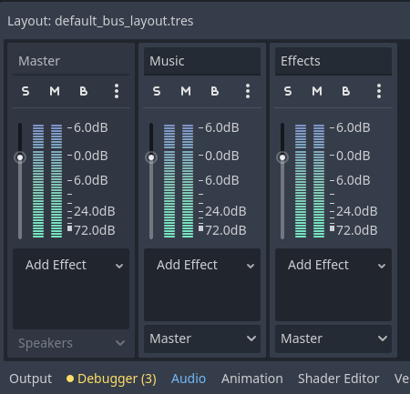

Unit 8.9 Music and sounds
In this unit, we will learn how to add music and sound effects to our videogame using the Godot Engine.
Audio Nodes in Godot
Godot provides several nodes to handle audio in your game. The most commonly used audio nodes are:
AudioStreamPlayer: Used to play sound effects. It can play a single audio stream.AudioStreamPlayer2D: Similar toAudioStreamPlayer, but it has 2D spatialization, meaning the sound can be positioned in a 2D space.AudioStreamPlayer3D: Similar toAudioStreamPlayer2D, but for 3D spatialization.AudioListener2DandAudioListener3D: Used to manage the listener's position in 2D and 3D space respectively, affecting how spatialized audio is heard.
Adding sound effects
To add sound effects to our game, we will use the AudioStreamPlayer node. Add an AudioStreamPlayer node as a child of the player character node in your scene for each sound you want to play (e.g., jump sound, coin collection sound).
The most important property of the AudioStreamPlayer node are:
- Stream: Here you can load the audio file you want to play (e.g., WAV, OGG).
- Volume Db: Adjust the volume of the sound.
- Pitch Scale: Adjust the pitch (frequency) of the sound.
- Autoplay: If enabled, the sound will play automatically when the scene starts.
- Bus: Select the audio bus where the sound will be routed (default is "Master").
To play a sound effect, you can use the play() method of the AudioStreamPlayer node. For example, to play a jump sound when the player jumps, you can add the following code to the player's script:
1 2 3 4 5 6 7 8 9 | |
Repeat the process for other sound effects like coin collection, game over, etc.
The same process can be followed to add sound effects to other game elements, such as enemies or obstacles.
Adding background music
To add background music to your game, you can use another AudioStreamPlayer node. Add an AudioStreamPlayer node as a child of the Start and Main scene root nodes.
To loop the background music, you must enable the Loop property of the music file in the FileSystem dock. Then, when you load the music file into the AudioStreamPlayer node, it will loop automatically.
In the Start scene script, you can play the music depending on the value of hte global variable that indicates if the music is enabled or not:
1 2 3 4 5 6 7 8 9 10 11 12 13 14 15 16 17 18 19 20 | |
In the Main scene script, you can start the music based on the global variable when the scene is ready (make sure that the Autoplay property is disabled):
1 2 3 4 5 6 7 | |
Audio buses
You can manage the audio output of your game using audio buses. Audio buses allow you to group multiple audio sources and control their volume and effects collectively.
By default, Godot has a "Master" bus that all audio nodes route to. You can create additional buses in the Audio tab of the Project Settings. For example, you can create separate buses for music and sound effects and adjust their volumes and effects independently.

Each AudioStreamPlayer node has a Bus property where you can select the bus to which the audio will be routed.